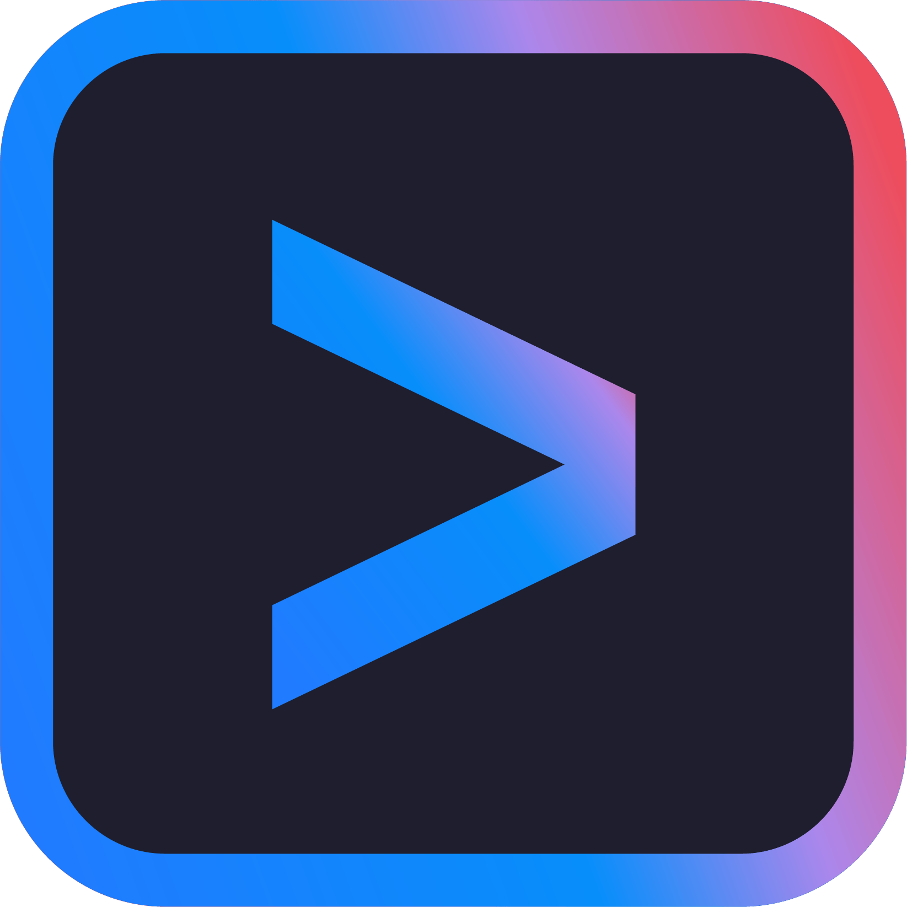

文档版本: dev
OpenZilo 平台¶
OpenZilo 是一个开放开发平台，让开发者通过可穿戴硬件构建随时可用的 AI 体验。
从智能戒指出发，OpenZilo 为开发者提供硬件、固件、SDK 和参考应用，连接语音、手势、生理信号、AI 智能体、计算机、机器人与物理世界。
这个仓库提供 Python SDK 和命令行工具，用于扫描和连接 OpenZilo 戒指、读取设备信息、下载录音、将 Speex 或单声道、双声道 Opus 转成 WAV，以及接收 IMU 和手势事件。
通过 openzilo device use 扫描并保存默认设备，再用 openzilo shell 进入交互终端，即可查询状态、录音和采集 IMU。详见中文 CLI 操作指南；远程录音需要配套扩展固件。
运行 uvx --from git+https://github.com/ziloai/OpenZilo.git openzilo shell，即可从 GitHub 获取工具并进入交互终端。详见CLI 操作指南。
设备按键与灯光说明适用于固件 V2.001.0002.0000。其他功能请查看版本要求；SDK 会查询设备支持的接口。
最新动态¶
- 我们发布了 OpenZilo-HMM，一个基于 OpenZilo 戒指的 AI 自定义手势训练框架。
- 我们发布了 AI 戒指选码工具，在微信搜索 “Zilo” 小程序即可体验。
开发套件¶
OpenZilo 目前提供两款开发套件：OpenZilo Q 和 OpenZilo X。
如果以语音交互为主，可选择配备双麦克风的 Q。
如果原型还需要生理信号感知，可选择 X。
| 传感器配置 | OpenZilo Q | OpenZilo X |
|---|---|---|
| 麦克风 | 2 个 | 1 个 |
| IMU | 配备 | 配备 |
| PPG 传感器 | — | 配备 |
OpenZilo Q¶
语音 + 手势开发套件
适用于：
- AI 智能体
- 语音交互
- 手势控制
- 机器人
- 计算机与移动设备
- 实验性人机智能交互界面
OpenZilo X¶
语音 + 手势 + 生理信号感知开发套件
增加生理信号感知能力，适用于构建：
- 感知健康状态的 AI 智能体
- 感知上下文的应用
- 多模态交互
- 个人感知实验
- 可穿戴 AI 研究
可以构建什么？¶
OpenZilo 的定位是开放的交互层，而非封闭的消费设备。
你可以用它构建：
- AI 智能体 — 通过语音和手势调用智能体并与其交互
- 机器人 — 将可穿戴设备的输入连接到机器人与物理系统
- 桌面与移动端 — 创建新的快捷操作、工作流和 AI 界面
- AR / XR — 探索空间计算中细微的可穿戴交互
- 健康感知 AI — 将生理信号与个人情境结合
- 实验性交互界面 — 构建我们尚未想象到的交互方式
AI 编程工具¶
克隆仓库后用下面的工具打开项目。项目说明会引导工具查找公开 API 和 llms.txt 文档索引。
| 工具 | 在仓库根目录启动 | 项目说明 |
|---|---|---|
codex |
AGENTS.md |
|
| Claude Code | claude |
CLAUDE.md |
| 用 Cursor 打开仓库 | AGENTS.md |
|
| GitHub Copilot | 在 IDE 中打开仓库 | Copilot 项目说明 |
 Gemini CLI |
gemini |
GEMINI.md |
opencode |
AGENTS.md |
可以直接提问：
“读取
llms.txt和 Python SDK 手册，使用openzilo导出的 API，写一个扫描戒指并打印型号、固件版本和电量的脚本。”
安装链接及跨仓库使用方法见 接入指南。
快速开始¶
需要 uv、Python 3.10+（可由 uv 自动安装）和 BLE 适配器；Linux 还需要 BlueZ 和蓝牙访问权限。
从 GitHub 安装设备 CLI：
uv tool install git+https://github.com/ziloai/OpenZilo.git
openzilo scan --timeout 10
openzilo info --address AA:BB:CC:DD:EE:FF
把示例地址换成 scan 返回的地址。在自己的 uv 项目中使用 SDK，运行 uv add git+https://github.com/ziloai/OpenZilo.git。不用 uv 时，可运行 python -m pip install git+https://github.com/ziloai/OpenZilo.git。
Python 调用示例：
import asyncio
import openzilo as sdk
async def main() -> None:
async with sdk.OpenZiloClient(address="AA:BB:CC:DD:EE:FF") as ring:
info = await sdk.get_system_info(ring)
print(info.model, info.firmware_version, info.battery_percent)
asyncio.run(main())
examples 中还有下载录音和读取 IMU 数据流的例子。
实时 PCM 音频需先运行 uv add "openzilo[pcm] @ git+https://github.com/ziloai/OpenZilo.git" 安装 PyAV，然后用
async with sdk.open_live_audio_stream(ring) 和 async for 接收录音开始、
音频帧和结束事件。音频为 16 kHz、16 位小端 PCM，声道数与设备设置一致，
每帧 20 ms。只有收到并检查录音结束事件后，才能确认整段音频完整。
退出上下文会结束接收并尝试取消订阅。该方式不需要 ffmpeg 可执行文件；
只接收压缩音频时使用 output="opus"。见实时音频示例
和 实时音频指南。
如果需要将 Speex 或单声道、双声道 Opus 转成 WAV，请安装 ffmpeg。audio-clear 会删除设备上的录音，调用时必须显式提供 --yes。
论文与合作机构¶
ComBodied Agents: a New Paradigm of Human-Centric Agentic AI 收录于 OpenZilo 官网。
引用¶
如果 OpenZilo 或 ComBodied Agents 范式对你的研究有帮助，欢迎引用：
@article{ding2026combodied,
title={ComBodied Agents: a New Paradigm of Human-Centric Agentic AI},
author={Ding, Qianggang and Wang, Xingyao and Feng, Rui and Wang, Zhibin and Yao, Feixiang and Mao, Kelong and Sun, Hao and Luo, Zhiyao and Tang, Jiankai and Li, Lei and Guo, Jiadong and Ni, Minheng and Lin, Weicong and Yang, Chenxi and Gao, Hongxiang and Chen, Zhenghua and Bai, Yang and Wu, Min and Cheng, Jun and Fu, Huazhu and Tao, Dacheng and Liu, Bang},
journal={arXiv preprint arXiv:2608.10915},
year={2026}
}
登上 OpenZilo GitHub Trend¶
想让你的项目出现在 OpenZilo 首页的 GitHub Trend 吗？
只需在项目的 README.md 中提到 “ComBodied AI”。
OpenZilo 会自动发现并展示围绕 ComBodied AI 生态构建的 GitHub 项目。
文档¶
- 文档首页：使用指南与开发文档
- 功能与版本要求：查看设备、固件与 SDK 要求
- SDK 与固件兼容：查询设备支持的功能
-
命令行指南：选择设备、录音和接收数据
-
Python SDK 文档：快速开始、功能指南和 API 参考
- BLE 协议参考：封包格式和已实现命令
- 架构与数据流：录音传输、音频解码及事件处理
- AI 编程工具接入指南与
llms.txt
许可证与贡献¶
软件和文档采用 MPL-2.0，硬件设计采用 CERN-OHL-W-2.0。品牌和第三方标识归各自权利人所有。